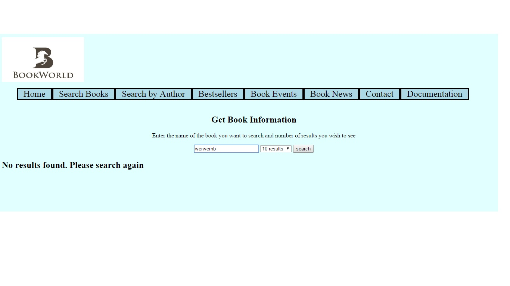

Search Books and Author Search
- There exist scenarios where the user input's a garbage value or a value for which there exist no results.
- These searches are handled using javascript, with the help of the predefined function data.hasOwnProperty(argument).

The above pic is a demonstration of invalid data input by the user.
Book events
- There exist states where no events are scheduled.
- Here, I used a temp variable to check if an instance has occured or not. If not, then the user is notified of no events.

The above pic is a demonstration of no data present for a particular state.
Source Code
Search books JS Code
Author Search JS Code
Bookevents JS Code